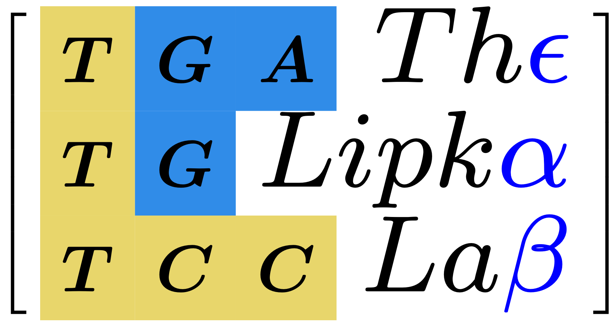

Innovating plant genomics with cutting-edge research.
The Lipka Lab is a multi-disciplinary research group at the University of Illinois Urbana-Champaign dedicated to the statistical dissection and selection of complex traits in crops. By bridging the gap between classical quantitative genetics and modern computational biology, the lab aims to develop accessible, breeder-friendly tools that accelerate genetic gain and improve crop resilience.